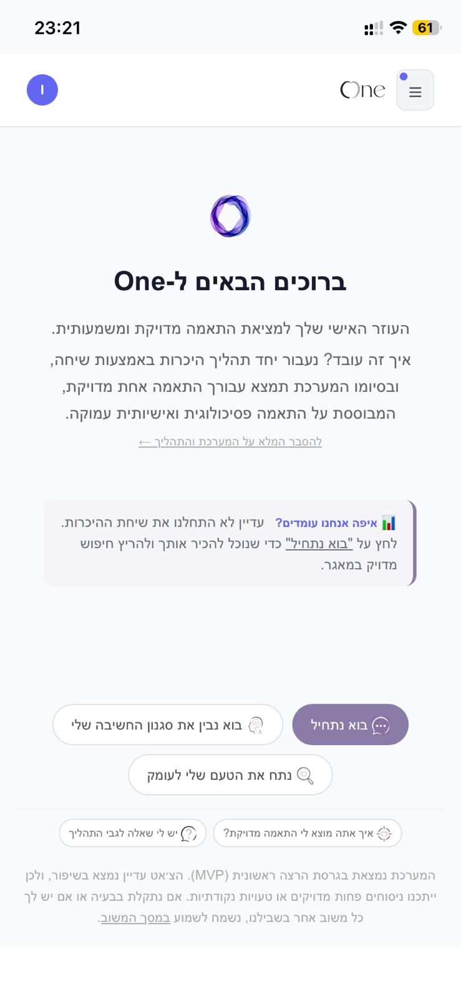
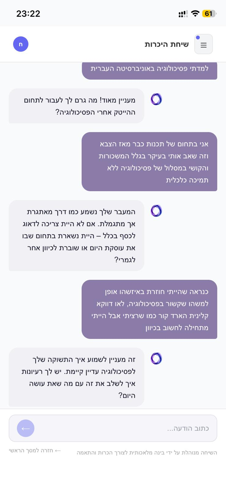
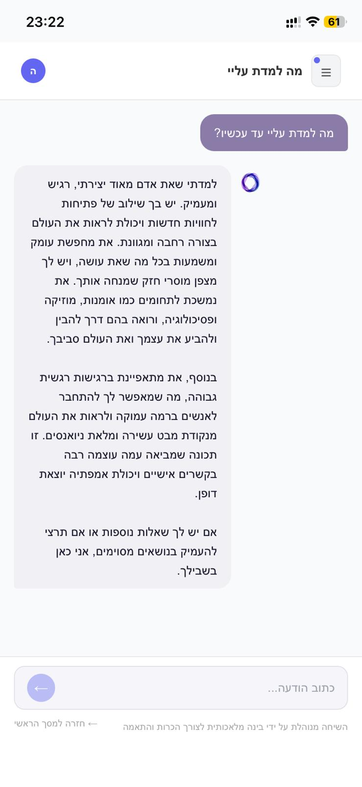
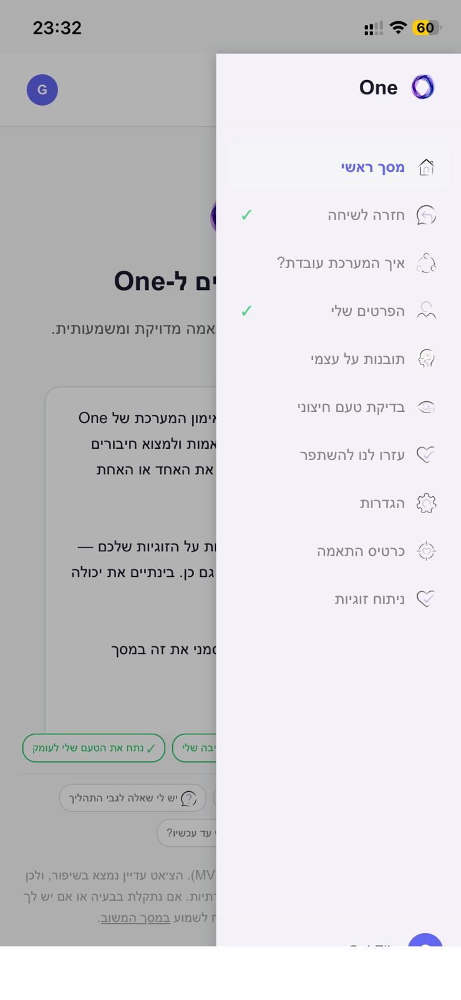
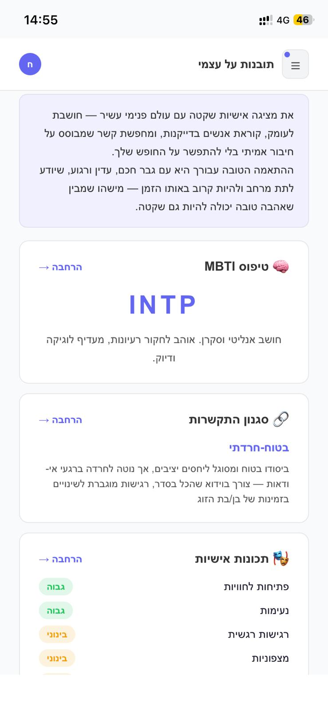
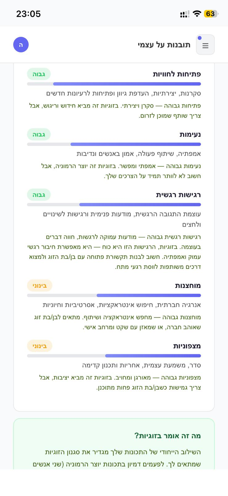
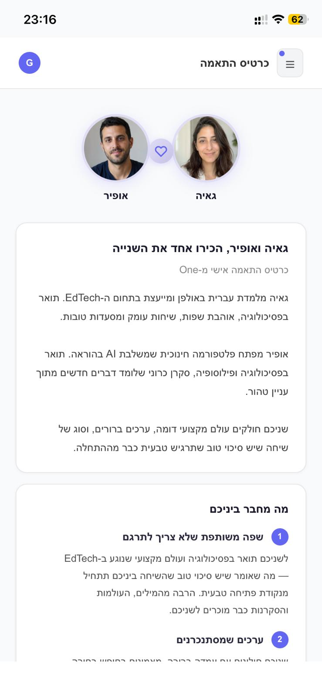
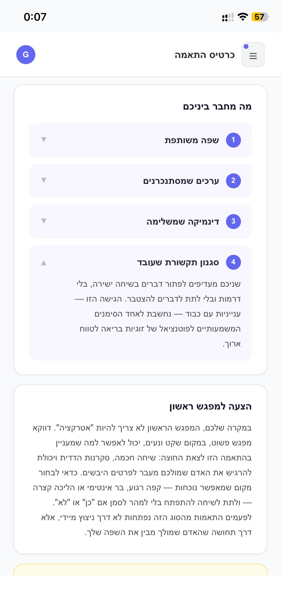

הוראות: לכל תמונה — לחצי F12 → Ctrl+Shift+M → הגדירי את הגודל לפי ה-label (1200x1920 או 1600x2560) → צלמי screenshot (⋮ → Capture screenshot).
או: לחצי ימני על התמונה → "Open image in new tab" → ומשם צלמי.
7 אינץ' (1200x1920)
shot1 — 7" (1200x1920)

shot2 — 7" (1200x1920)

shot3 — 7" (1200x1920)

shot4 — 7" (1200x1920)

shot5 — 7" (1200x1920)

shot6 — 7" (1200x1920)

shot7 — 7" (1200x1920)

shot8 — 7" (1200x1920)

10 אינץ' (1600x2560)